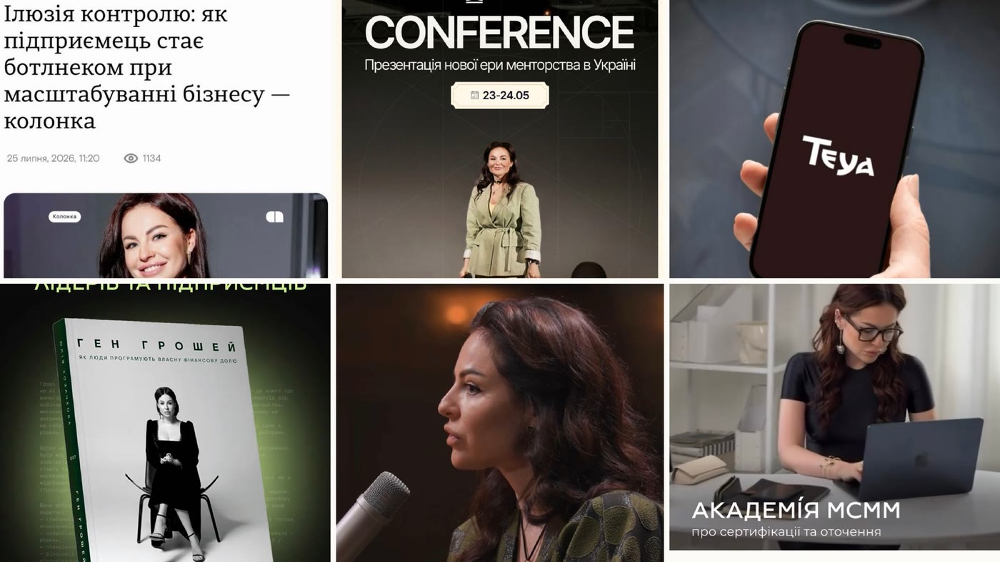
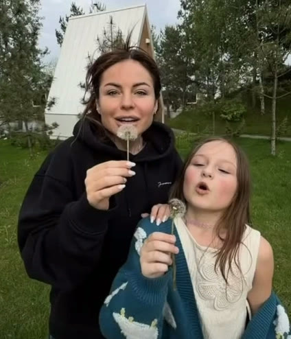
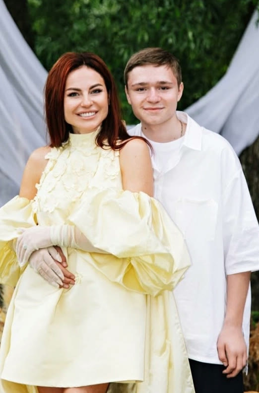
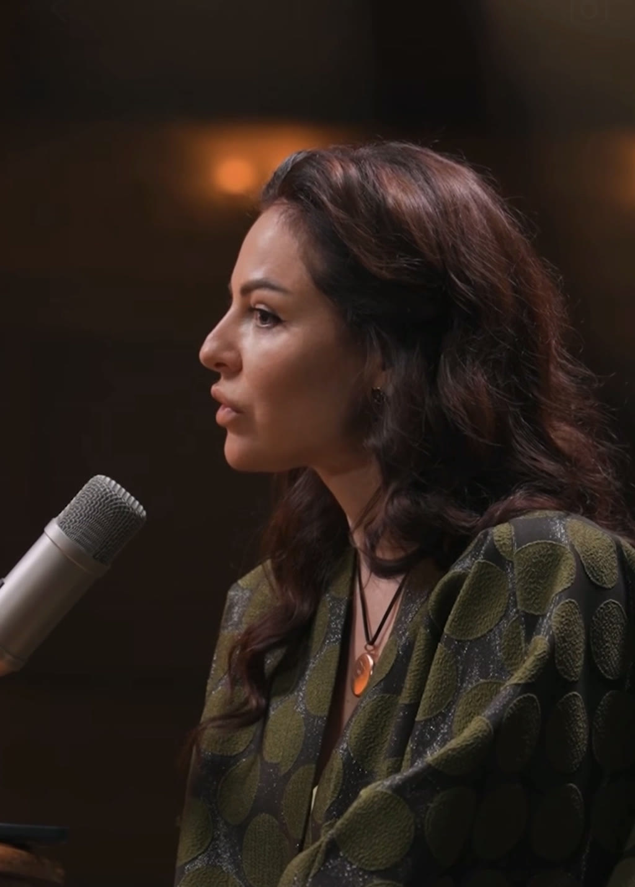
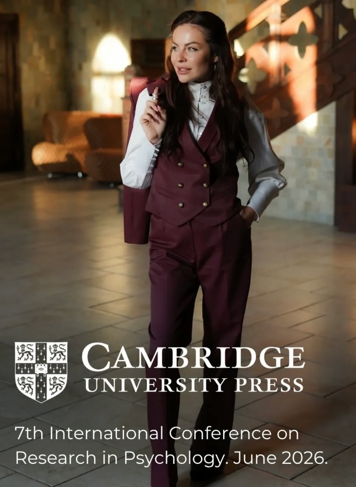
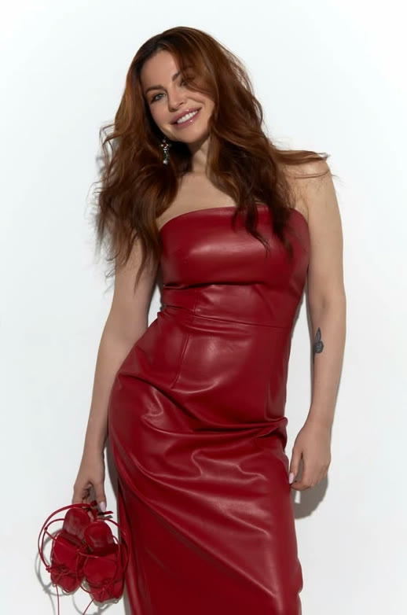
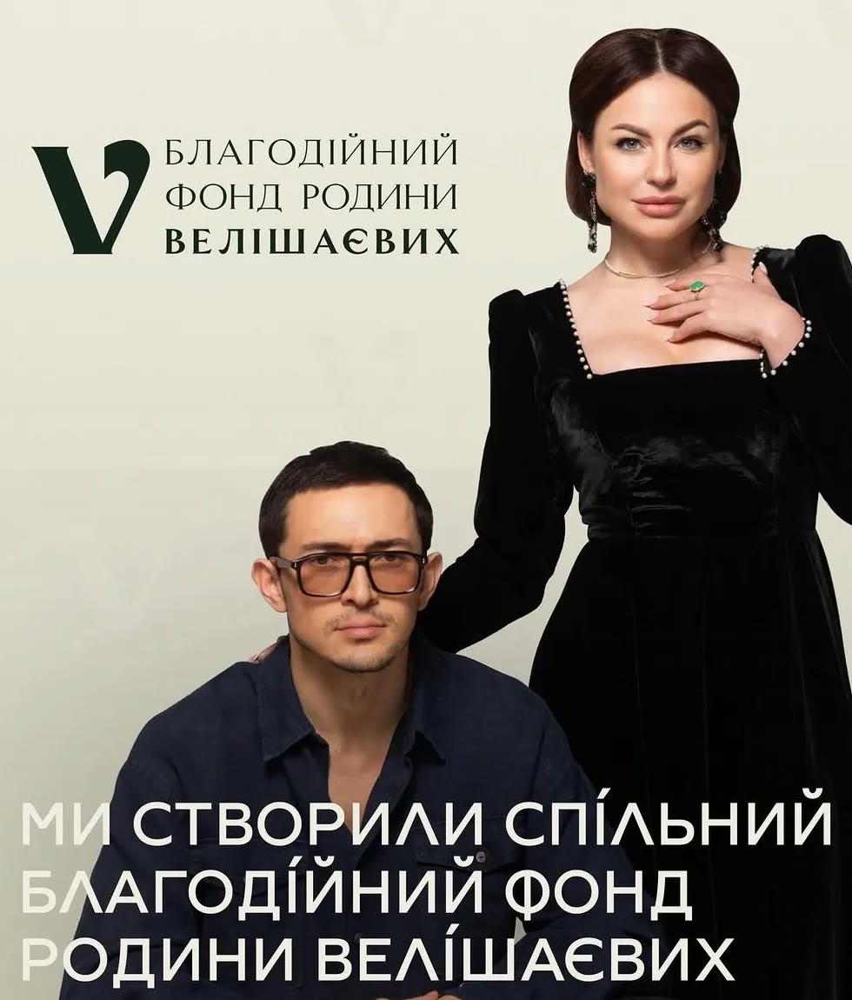

Давайте знайомитися ♥

Олександра Лугова
Маркетологиня, стратегиня та продюсерка. З 2019 року працюю з експертами й брендами: допомагаю знаходити їхню справжню відмінність, створювати позиціонування, продукти, контентні системи та запуски на $10 000, $30 000 і $74 000. За цей час попрацювала з понад 30 брендами та сотнями експертів із різних ніш.
Моя головна сила — побачити в людині те, що вона сама часто не помічає:
- за що її насправді обирають;
- як саме вона створює результат;
- що робить її живою та впізнаваною;
- як перетворити це на сильний бренд і систему масштабування.
Так з'явився мій авторський метод «Об'ємний персонаж». У ньому ми не описуємо людину словами «сильна», «розумна» чи «харизматична». Ми аналізуємо її реальні рішення, досвід, позицію, ролі, контрасти та повторювані способи впливати на людей.
І сьогодні я покажу, як це працює, на прикладі Юлії Козачкової. Ми розберемо не лише її експертність, продукти чи масштаб бізнесу. Ми спробуємо відповісти на питання:
Пройдемо твої 7 шарів і побачимо,
з чого будувати твій бренд.
Що ти отримаєш,залишивши заявку
3 подарунки, які допоможуть тобі знайти свою унікальність і перестати зливатися з сотнею однакових експертів
Конструктор «Карта Об'ємного Персонажу»
Зробиш діагностику себе і побачиш сильні сторони й особливості, за які обирають саме тебе.
Розбір Лєри Бородіної
Стратегія особистого бренду лідерки ринку — десятки ідей одразу у свій блог.
Доступ у закритий Telegram-канал
«Ідеї для контенту»: розбори ефективних сторітелів лідерів ринку.
Хто така Юлія
Юлія Велішаєва — українська підприємиця, практикуюча психологиня та коучиня, наукова дослідниця й авторка книг «Мистецтво бути в Цей: Час» і «Ген грошей». Членкиня American Psychological Association та Асоціації клінічних психологів і психіатрів України. У 2026 році брала участь у міжнародній науковій конференції з психології в Кембриджі та представляла власні дослідницькі роботи.

Вона заснувала EdTech-екосистему Mind Master, є власницею Академії MCMM із сертифікації коучів і менторів та співвласницею застосунку Teya у сфері Mental Health.
Але її феномен не лише в кількості продуктів, виступів чи наукових регалій. Від Юлії дуже сильно відчувається внутрішній стержень. Вона багато працює, постійно навчається, створює книги, розвиває технологічні продукти, виступає перед великими аудиторіями та ставить надзвичайно високу планку собі й команді.
Водночас вона не перетворює силу на свою єдину роль. У її блозі поруч із підприємицею та дослідницею живе жінка, яка нещодавно одружилася, ніжна з чоловіком, пишається батьками, танцює й малює з дітьми, вірить у Бога та вміє посміятися із себе. Вона може виступати перед великою аудиторією, а потім викласти живе відео, де чоловік несе її на руках, і пожартувати: «У мене ніжки болять».
Саме це робить її не просто сильною експерткою, а Об'ємним персонажем.
Покажу, що з твоєї особистості вже зараз працює на бренд — і чого не вистачає.
Записатися на розбір →Позиція
Те, у що людина вірить і що відстоює.
У публічній комунікації Юлії постійно поєднуються дві думки: «Великі зміни створюються маленькими діями щодня» і «Розвивайте в собі парадигму: або найкращий, або ніякий».
На перший погляд ці ідеї суперечать одна одній. Але разом вони формують її позицію: не потрібно чекати одного великого ривка — потрібно щодня робити невеликі дії, але тримати перед собою найвищу планку якості.
Юлія не транслює, що достатньо просто повірити у себе. Для неї сильна ідея без дисципліни, підготовки, практики й високих стандартів залишається просто ідеєю.
Водночас її визначення успіху не обмежується масштабом. Для неї успіх — це задоволення від власного життя: коли бізнес не суперечить тобі; коли масштаб не коштує внутрішнього спокою; коли результат не створений ціною повної втрати себе.
Будуй велике. Працюй на рівні найкращих. Але не створюй успіх, у якому тобі самій погано жити.
На діагностиці сформулюємо твою позицію — те, у що ти віриш і що робить твій контент впізнаваним.
Знайти свою позицію →Ролі життя
Різні сторони особистості, які роблять людину живою, а не лише експерткою.
І найцікавіше — вона не переносить одну роль на все своє життя. У бізнесі може бути жорсткою до стандартів, зібраною й вимогливою. На сцені — сильною та впевненою. У науці — дисциплінованою дослідницею, яка продовжує навчатися, навіть уже маючи велику аудиторію, бізнес і власні методики. А поруч із чоловіком дозволяє собі бути ніжною, грайливою, просити про турботу й не контролювати все самостійно.
Сильна жінка не зобов'язана залишатися сильною щохвилини й у кожному просторі.


У її блозі дуже помітні сімейні цінності: вона перевезла батьків ближче до себе, відкрито показує, як пишається татом, проводить час із дітьми, малює й танцює разом із ними. Із контенту відчувається, що вона не просто мама — вона головний фанат своїх дітей. Сім'я в її образі не декоративна лінія для теплого контенту, а частина системи цінностей, навколо якої вона будує життя.
Тоді запрошую тебе на безкоштовний розбір зі мною.
Записатися →Ролі впливу
Те, ким людина стає для інших і яку цінність створює у взаємодії.
Опора
Юлія повертає людину до внутрішньої стійкості, але не створює залежність від себе. Її мета — не «прив'язати» клієнта, а навчити його самостійно керувати власними почуттями, думками та поведінкою. Її роль звучить не «Я знаю, як вам жити», а «Я допоможу вам навчитися бути опорою для себе».
Провідниця
Вона проводить людину не лише до зовнішнього результату, а до іншої якості життя. Для неї недостатньо більше заробити, створити бізнес, стати продуктивнішою чи досягти цілі — важливо, ким людина стає в цьому процесі й чи не суперечить результат її справжнім цінностям.
Дослідниця
Юлія не позиціонує себе людиною, яка вже отримала остаточні відповіді. Вона продовжує навчатися, проводити дослідження, публікувати науково-практичні матеріали, тестувати методики та виступати на професійних конференціях.
Лідерка високої планки
Вона не лише підтримує — вона піднімає стандарти людини щодо самої себе: «У тебе може вийти. Але для цього недостатньо мріяти — потрібно щодня ставати сильнішою у своїй справі». Ця планка проявляється і в тому, як вона формує команду: бере не просто виконавців, а фанатиків своєї справи.
Опора + Провідниця + Дослідниця + Лідерка високої планки.


Розберемо твої ролі впливу — за що тебе обирають і чому до тебе повертаються.
Розібрати свої ролі →Контраст
Поєднання несподіваних сторін, яке робить людину живою й незабутньою.

У роботі її ритм дуже інтенсивний: довгі робочі дні, висока планка, постійне навчання, виступи, книги, подкасти, колаборації, розвиток застосунків, робота з командою — майже без довгих пауз. Водночас у близьких стосунках ми бачимо іншу її сторону: жінку, яка ніжна з чоловіком, дозволяє про себе піклуватися, танцює з дітьми, пишається ними, сміється із себе, показує любов до батьків і говорить про віру в Бога.
Другий контраст: вона працює з внутрішнім світом людини, але мислить як підприємиця-практик. Говорить про щастя, внутрішню опору, віру, емоційну стабільність — і перекладає це в застосунок, академію, книги, сертифікаційні програми, дослідження та цифрові продукти.
Третій контраст: вона багато працює, але не подає виснаження як визначення успіху для кожного. Її думка глибша: знайди справу, заради якої ти готова тримати високу планку, але не створи життя, яке суперечить тобі.
Щоб бути сильною у світі, не потрібно відмовлятися від ніжності поруч із тими, кого любиш.
Свій контраст майже неможливо побачити зсередини — знайдемо ту саму пару сторін, яка виділить тебе.
Що ти отримаєш,залишивши заявку
3 подарунки, які допоможуть тобі знайти свою унікальність і перестати зливатися з сотнею однакових експертів
Конструктор «Карта Об'ємного Персонажу»
Зробиш діагностику себе і побачиш сильні сторони й особливості, за які обирають саме тебе.
Розбір Лєри Бородіної
Стратегія особистого бренду лідерки ринку — десятки ідей одразу у свій блог.
Доступ у закритий Telegram-канал
«Ідеї для контенту»: розбори ефективних сторітелів лідерів ринку.
Шлях
Досвід, який сформував мислення, метод і сьогоднішню версію людини.
- від практики роботи з людьми
- до створення власних психологічних і коучингових методик
- до книг та освітніх програм
- до Академії MCMM
- до застосунку Teya
- до повноцінної EdTech-екосистеми Mind Master
- до наукової та академічної діяльності
Важливо, що, вже маючи велику аудиторію та успішні проєкти, вона не зупинилася в ролі людини, яка «все знає». Вона продовжує обирати роль учениці: навчається, бере участь у конференціях, готує дослідницькі роботи, планує подальший академічний розвиток.
Водночас вона не приховує управлінські помилки. У колонці про створення EdTech-екосистеми Юлія пише, що за 11 років роботи робила помилки, які коштували часу, грошей та енергії, але саме вони стали її управлінською освітою.
Це не історія миттєвого успіху. Це історія людини, яка діє, помиляється, аналізує, навчається, піднімає планку й створює наступний рівень.
Складемо з нього шлях, який доводить твою експертність сильніше за будь-які кейси.
Зібрати свій шлях →Емоція контакту
Те, що люди відчувають після взаємодії з людиною.
Після контакту з Юлією відчувається сила. Але разом із нею — вимогливість: «Ти здатна на більше. Але для цього потрібно перестати чекати й почати діяти».
- внутрішня опора;
- віра у власні можливості;
- бажання зібратися;
- повага до дисципліни;
- прагнення підняти власну планку;
- розуміння сили маленьких щоденних дій.
Саме тому після її контенту хочеться не просто повірити у себе. Хочеться зробити конкретний крок.
Якщо чіткої відповіді немає — саме з цього почнемо на безкоштовній діагностиці.
Записатися на діагностику →Прояв
Те, як персонаж стає помітним у контенті, продукті та комунікації.
Маленькі дії щодня
Її позиція проявляється в регулярності: навчання, робота, виступи, контент, розвиток продуктів, книги, подкасти, колаборації, наукова діяльність. Фраза про маленькі дії — не лише порада аудиторії, а спосіб, у який побудований її власний шлях.
Парадигма «або найкращий, або ніякий»
Висока інтенсивність роботи, вимогливість до продуктів, постійне вдосконалення, серйозна підготовка до виступів, академічне поглиблення, відбір людей у команду за рівнем їхньої включеності.
Продукт у процесі
Юлія транслює не лише готові релізи: що тестувала команда, які функції змінювали, які рішення не дали результату, як продукт удосконалюється. Це підтверджує образ практика, а не теоретика.
Знання, переведені в екосистему
Її персонаж проявлений не в одному блозі — він зашитий у Mind Master, Академію MCMM, застосунок Teya, книги, консультації, сертифікаційні програми та наукові публікації.
Життя поза сценою
У контенті є професійні виступи, подкасти, наукові теми, робота над продуктами. А поруч — відео в моменті, гумор, чоловік, діти, батьки, танці, втома, звичайне життя. Аудиторія бачить, що відбувається з людиною, коли вимикаються сцена, студія та експертний формат.
Віра як частина опори
Її віра в Бога не виглядає окремою рубрикою, відірваною від решти життя. Вона доповнює головну лінію персонажа: внутрішня сила будується не лише на контролі, роботі та власних досягненнях — у ній є місце довірі, любові й вірі.

Покажу, як вбудувати твого Об'ємного персонажа в контент, продукт і продажі.
Проявити свою силу →🧩 Формула Об'ємного персонажа
Стисла «карта» особистості — зручно тримати перед очима.

Великі зміни створюються маленькими діями щодня, але справжня реалізація потребує парадигми «або найкращий, або ніякий». Успіх має давати задоволення від власного життя.
Підприємиця, психологиня, коучиня, дослідниця, авторка, спікерка, керівниця, кохана жінка, мама — головний фанат своїх дітей, донька та людина віри.
Опора + Провідниця + Дослідниця + Лідерка високої планки.
Хардкорна в реалізації × м'яка в любові; працює з внутрішнім світом × створює технологічні продукти; безкомпромісна до якості × тепла до близьких.
Від індивідуальної роботи з людьми — до власних методик, книг, Академії, застосунку, EdTech-екосистеми та наукової діяльності.
Внутрішня сила, бажання діяти, повага до дисципліни, прагнення підняти власну планку й дозвіл не втрачати себе.
Інтенсивна щоденна робота, книги, застосунки, виступи, подкасти, дослідження, тестування продуктів, команда сильно включених людей, живий контент, віра в Бога, любов до чоловіка, підтримка батьків і щире захоплення дітьми.
За 40 хвилин пройдемо всі 7 шарів і зберемо твою власну формулу Об'ємного персонажа.
Отримати свою карту →🎯 Головний висновок
Феномен Юлії не лише в тому, що вона сильна. Її феномен у тому, що вона не зробила силу своєю єдиною роллю. Вона може бути масштабною на сцені; безкомпромісною до якості в роботі; допитливою в науці; ніжною з чоловіком; головним фанатом своїх дітей; вдячною донькою; людиною віри — і людиною, яка може посміятися із себе.
Її Об'ємний персонаж побудований не на виборі: сила чи м'якість; бізнес чи сім'я; наука чи віра; масштаб чи внутрішній спокій. Вона поєднує ці сторони. І саме тому не виглядає образом, створеним спеціально для соціальних мереж.
Саме тому в методології Об'ємного персонажа ми аналізуємо не лише продукт, контент, воронку чи візуальність — ми аналізуємо людину, яка все це створила. Тому що продукт дуже часто є продовженням особистості свого автора.
І коли людина будує бренд не навколо трендів або вигаданого образу, а навколо власної позиції, досвіду, ролей, контрастів і способу взаємодії зі світом — з'являються продукти, які не просто купують. Їм довіряють. До них повертаються. І їх люблять.
Потрібно побачити свою силу, зробити її видимою — і побудувати навколо неї систему.
Записатися на розбір →Партнерська програма SOLARIUM

Я впевнена, що у кожній людині є суперсила. Її просто потрібно знайти. Запрошую вас у свою партнерську програму SOLARIUM, де ви почнете заробляти та масштабуватися через власну унікальність, а не через копіювання чужих стратегій.
За 3 місяці я проведу вас за руку, де ми разом:
- знайдемо вашу суперсилу та те, за що вам готові платити найбільші гроші;
- зрозуміємо аудиторію та причини, через які вона обирає;
- створимо вашого Об'ємного персонажа та сформуємо сильне позиціонування;
- вбудуємо його в контент, продукт, комунікацію та продажі;
- створимо стратегію росту до стабільних $10 000–30 000, яка підсилює вас.
Чому обирають саме вас? Якою людиною вас повинна запам'ятати аудиторія? І як перетворити власну силу на медійність, сильні продукти та стабільні гроші?
Я звʼяжуся з тобою, щоб познайомитися, розібрати твою стратегію, блог і запит.
🎁 Бонусиза заповнення анкети
Три подарунки одразу після заповнення анкети
Воркбук-конструктор «Карта Об'ємного Персонажу»
Зробиш діагностику свого життя та побачиш сильні сторони й особливості, за які обирають саме тебе.
Розбір Об'ємного Персонажу Лєри Бородіної
Готова стратегія особистого бренду лідерки ринку.
Закритий Telegram-канал «Ідеї для контенту»
Збираю та розбираю ефективні сторітели лідерів ринку.
Тобі не потрібно вигадувати нового себе. Потрібно побачити свою силу та побудувати навколо неї систему, яку неможливо скопіювати.